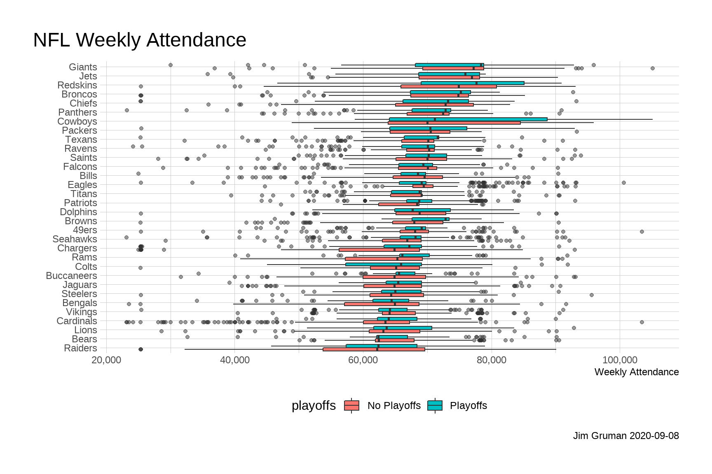
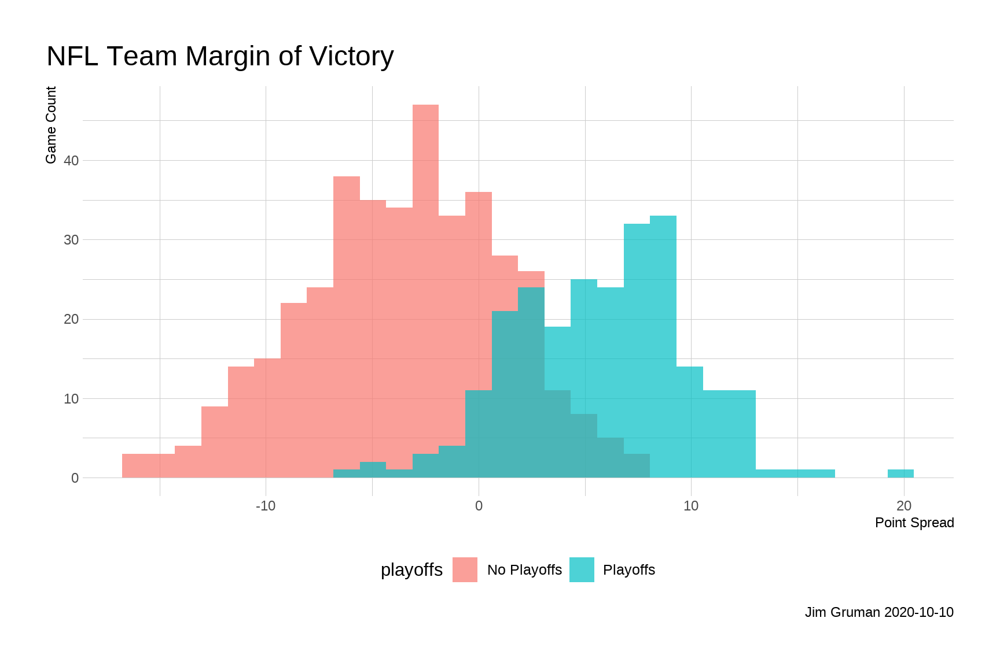
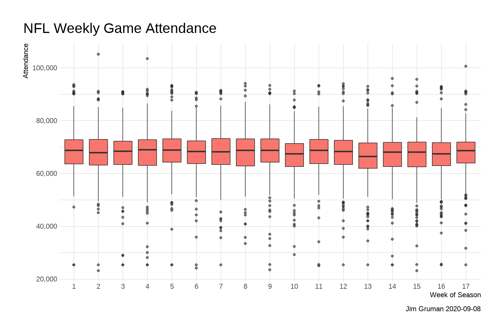
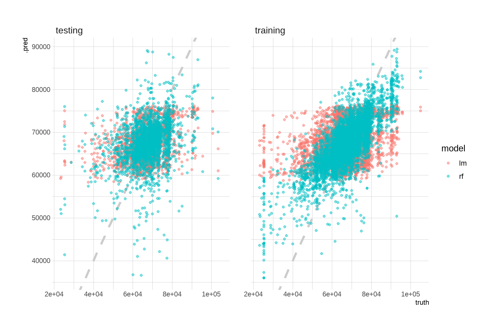
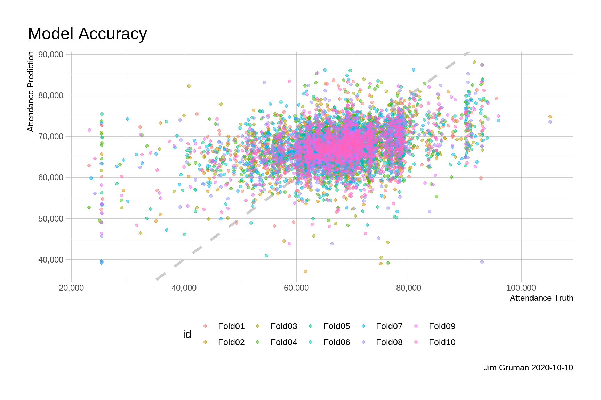

Last updated: 2020-10-10
Checks: 7 0
Knit directory: myTidyTuesday/
This reproducible R Markdown analysis was created with workflowr (version 1.6.2). The Checks tab describes the reproducibility checks that were applied when the results were created. The Past versions tab lists the development history.
Great! Since the R Markdown file has been committed to the Git repository, you know the exact version of the code that produced these results.
Great job! The global environment was empty. Objects defined in the global environment can affect the analysis in your R Markdown file in unknown ways. For reproduciblity it’s best to always run the code in an empty environment.
The command set.seed(20200907) was run prior to running the code in the R Markdown file. Setting a seed ensures that any results that rely on randomness, e.g. subsampling or permutations, are reproducible.
Great job! Recording the operating system, R version, and package versions is critical for reproducibility.
Nice! There were no cached chunks for this analysis, so you can be confident that you successfully produced the results during this run.
Great job! Using relative paths to the files within your workflowr project makes it easier to run your code on other machines.
Great! You are using Git for version control. Tracking code development and connecting the code version to the results is critical for reproducibility.
The results in this page were generated with repository version 467d8cf. See the Past versions tab to see a history of the changes made to the R Markdown and HTML files.
Note that you need to be careful to ensure that all relevant files for the analysis have been committed to Git prior to generating the results (you can use wflow_publish or wflow_git_commit). workflowr only checks the R Markdown file, but you know if there are other scripts or data files that it depends on. Below is the status of the Git repository when the results were generated:
Ignored files:
Ignored: .Rhistory
Ignored: .Rproj.user/
Untracked files:
Untracked: figure/
Note that any generated files, e.g. HTML, png, CSS, etc., are not included in this status report because it is ok for generated content to have uncommitted changes.
These are the previous versions of the repository in which changes were made to the R Markdown (analysis/NFLattendance.Rmd) and HTML (docs/NFLattendance.html) files. If you’ve configured a remote Git repository (see ?wflow_git_remote), click on the hyperlinks in the table below to view the files as they were in that past version.
| File | Version | Author | Date | Message |
|---|---|---|---|---|
| html | e450c9a | opus1993 | 2020-09-08 | Build site. |
| Rmd | bee6f68 | opus1993 | 2020-09-08 | wflow_publish(“analysis/NFLattendance.Rmd”) |
| html | 4932580 | opus1993 | 2020-09-07 | Build site. |
| Rmd | 8e48ddc | opus1993 | 2020-09-07 | wflow_publish(“analysis/NFLattendance.Rmd”) |
Let’s build a very simple model for NFL attendance
Load the attendance and team standings data from Github
attendance <- read_csv('https://raw.githubusercontent.com/rfordatascience/tidytuesday/master/data/2020/2020-02-04/attendance.csv')
standings <- read_csv('https://raw.githubusercontent.com/rfordatascience/tidytuesday/master/data/2020/2020-02-04/standings.csv')
attendance_joined<-attendance %>%
left_join(standings, by = c("year", "team_name", "team"))Explore the files and look for trends. In this boxplot visual, some teams certainly expect higher weekly attendance.
attendance_joined %>%
filter(!is.na(weekly_attendance))%>%
ggplot(aes(fct_reorder(team_name, weekly_attendance),
weekly_attendance,
fill = playoffs))+
geom_boxplot(outlier.alpha = 0.5)+
scale_y_continuous(labels = scales::label_comma())+
labs(title = "NFL Weekly Attendance",
caption = paste0("Jim Gruman ",Sys.Date()),
x = "", y = "Weekly Attendance")+
theme(plot.title.position = "plot",
legend.position = "bottom")+
coord_flip()
In this histogram, playoff-bound teams generally have higher point spread margins over the course of many games.
attendance_joined %>%
distinct(team_name, year, margin_of_victory, playoffs)%>%
ggplot(aes(margin_of_victory, fill = playoffs))+
geom_histogram(position = "identity", alpha = 0.7)+
labs(title = "NFL Team Margin of Victory",
caption = paste0("Jim Gruman ",Sys.Date()),
x = "Point Spread", y = "Game Count")+
theme(plot.title.position = "plot",
legend.position = "bottom")
Across the weeks of the season, this data visualization shows the distribution of attendance by week number.
attendance_joined %>%
mutate(week = factor(week))%>%
ggplot(aes(week, weekly_attendance, fill = "blue"))+
geom_boxplot(show.legend = FALSE, outlier.alpha = 0.4)+
labs(title = "NFL Weekly Game Attendance",
caption = paste0("Jim Gruman ",Sys.Date()),
x = "Week of Season", y = "Attendance")+
theme(plot.title.position = "plot",
legend.position = "bottom")+
scale_y_continuous(labels = scales::label_comma())
To build models for the prediction of weekly attendance, we will select for features arbitrarily on the team_name, the year, the week of the game, and the margin of victory.
attendance_df<-attendance_joined %>%
filter(!is.na(weekly_attendance))%>%
dplyr::select(weekly_attendance, team_name, year, week,
margin_of_victory, strength_of_schedule, playoffs)First, the data are split into training and testing sets at about 75/25, stratifying for similar playoff outcomes in both.
library(tidymodels)
attendance_split<-attendance_df %>%
initial_split(strata = playoffs)
nfl_train <-training(attendance_split)
nfl_test <- testing(attendance_split)A simple linear model is specified and fit, and the estimates of coefficients are shown here:
lm_spec<- linear_reg(mode = "regression")%>%
set_engine(engine = "lm")
lm_fit<-lm_spec %>%
fit(weekly_attendance ~ ., data = nfl_train)
tidy(lm_fit) %>% arrange(-estimate)# A tibble: 37 x 5
term estimate std.error statistic p.value
<chr> <dbl> <dbl> <dbl> <dbl>
1 team_nameRedskins 7142. 759. 9.41 6.23e-21
2 team_nameCowboys 6939. 756. 9.18 5.57e-20
3 team_nameGiants 6709. 763. 8.80 1.74e-18
4 team_nameJets 4956. 776. 6.38 1.82e-10
5 team_nameBroncos 3441. 754. 4.56 5.11e- 6
6 team_nameChiefs 2614. 759. 3.44 5.74e- 4
7 team_nameEagles 1941. 763. 2.55 1.09e- 2
8 team_namePanthers 1700. 768. 2.21 2.70e- 2
9 team_namePackers 1674. 766. 2.19 2.89e- 2
10 team_nameSaints 992. 769. 1.29 1.97e- 1
# ... with 27 more rowstidy(lm_fit) %>% arrange(-p.value) %>% filter(p.value < 0.05)# A tibble: 26 x 5
term estimate std.error statistic p.value
<chr> <dbl> <dbl> <dbl> <dbl>
1 team_namePackers 1674. 766. 2.19 0.0289
2 team_namePanthers 1700. 768. 2.21 0.0270
3 (Intercept) -74257. 33474. -2.22 0.0266
4 team_nameEagles 1941. 763. 2.55 0.0109
5 team_nameRams -1983. 763. -2.60 0.00938
6 team_nameVikings -2201. 759. -2.90 0.00375
7 team_nameBears -2317. 755. -3.07 0.00216
8 team_nameLions -2513. 771. -3.26 0.00112
9 week -64.1 19.2 -3.33 0.000863
10 team_nameChiefs 2614. 759. 3.44 0.000574
# ... with 16 more rowsA comparable random forest regression is specified and fit here:
rf_spec<- rand_forest(mode = "regression") %>%
set_engine(engine = "ranger")
rf_fit<-rf_spec %>%
fit(weekly_attendance ~ ., data = nfl_train)
tidy(lm_fit) %>% arrange(-estimate)# A tibble: 37 x 5
term estimate std.error statistic p.value
<chr> <dbl> <dbl> <dbl> <dbl>
1 team_nameRedskins 7142. 759. 9.41 6.23e-21
2 team_nameCowboys 6939. 756. 9.18 5.57e-20
3 team_nameGiants 6709. 763. 8.80 1.74e-18
4 team_nameJets 4956. 776. 6.38 1.82e-10
5 team_nameBroncos 3441. 754. 4.56 5.11e- 6
6 team_nameChiefs 2614. 759. 3.44 5.74e- 4
7 team_nameEagles 1941. 763. 2.55 1.09e- 2
8 team_namePanthers 1700. 768. 2.21 2.70e- 2
9 team_namePackers 1674. 766. 2.19 2.89e- 2
10 team_nameSaints 992. 769. 1.29 1.97e- 1
# ... with 27 more rowsresults_train<-lm_fit %>%
predict(new_data = nfl_train) %>%
mutate(truth = nfl_train$weekly_attendance,
model = "lm")%>%
bind_rows(rf_fit %>%
predict(new_data = nfl_train) %>%
mutate(truth = nfl_train$weekly_attendance,
model = "rf"))
results_test<-lm_fit %>%
predict(new_data = nfl_test) %>%
mutate(truth = nfl_test$weekly_attendance,
model = "lm")%>%
bind_rows(rf_fit %>%
predict(new_data = nfl_test) %>%
mutate(truth = nfl_test$weekly_attendance,
model = "rf"))results_train %>%
group_by(model)%>%
rmse(truth = truth, estimate = .pred)# A tibble: 2 x 4
model .metric .estimator .estimate
<chr> <chr> <chr> <dbl>
1 lm rmse standard 8344.
2 rf rmse standard 6070.results_test %>%
group_by(model)%>%
rmse(truth = truth, estimate = .pred)# A tibble: 2 x 4
model .metric .estimator .estimate
<chr> <chr> <chr> <dbl>
1 lm rmse standard 8240.
2 rf rmse standard 8681.The random forest model here appears to overfit the training data set, with disappointing results on new data.
results_test %>%
mutate(train = "testing") %>%
bind_rows(results_train %>%
mutate(train = "training")) %>%
ggplot(aes(truth, .pred, color = model))+
geom_abline(lty = 2, color = "gray80", size = 1.5)+
geom_point(alpha = 0.5)+
facet_wrap(~train)
### Lets try again, with resampling on the traininglibrary(furrr)
nfl_folds<- vfold_cv(nfl_train, strata = playoffs)
rf_res<-fit_resamples(
weekly_attendance ~ .,
rf_spec,
nfl_folds,
control = control_resamples(save_pred = TRUE)
)
rf_res %>%
collect_metrics()# A tibble: 2 x 5
.metric .estimator mean n std_err
<chr> <chr> <dbl> <int> <dbl>
1 rmse standard 8585. 10 125.
2 rsq standard 0.133 10 0.0104rf_res %>%
unnest(.predictions) %>%
ggplot(aes(weekly_attendance, .pred, color = id))+
geom_abline(lty = 2, color = "gray80", size = 1.5)+
geom_point(alpha = 0.5)+
labs(title = "Model Accuracy",
caption = paste0("Jim Gruman ",Sys.Date()),
x = "Attendance Truth", y = "Attendance Prediction")+
theme(plot.title.position = "plot",
legend.position = "bottom")+
scale_y_continuous(labels = scales::label_comma())+
scale_x_continuous(labels = scales::label_comma())
After resampling, the root mean squared error of the random forest model on test data is improved marginally, compared to the conventional linear model.
Credits: Julia Silge, RStudio Thomas Mock, RStudio
sessionInfo()R version 4.0.0 (2020-04-24)
Platform: x86_64-w64-mingw32/x64 (64-bit)
Running under: Windows 10 x64 (build 19041)
Matrix products: default
locale:
[1] LC_COLLATE=English_United States.1252
[2] LC_CTYPE=English_United States.1252
[3] LC_MONETARY=English_United States.1252
[4] LC_NUMERIC=C
[5] LC_TIME=English_United States.1252
attached base packages:
[1] stats graphics grDevices utils datasets methods base
other attached packages:
[1] furrr_0.1.0 future_1.19.1 yardstick_0.0.7 workflows_0.2.0
[5] tune_0.1.1 rsample_0.0.8 recipes_0.1.13 parsnip_0.1.3
[9] modeldata_0.0.2 infer_0.5.3 dials_0.0.9 scales_1.1.1
[13] broom_0.7.1 tidymodels_0.1.1 forcats_0.5.0 stringr_1.4.0
[17] dplyr_1.0.2 purrr_0.3.4 readr_1.4.0 tidyr_1.1.2
[21] tibble_3.0.3 ggplot2_3.3.2 tidyverse_1.3.0 workflowr_1.6.2
loaded via a namespace (and not attached):
[1] colorspace_1.4-1 ellipsis_0.3.1 class_7.3-17 showtext_0.9
[5] rprojroot_1.3-2 fs_1.5.0 rstudioapi_0.11 showtextdb_3.0
[9] listenv_0.8.0 farver_2.0.3 prodlim_2019.11.13 fansi_0.4.1
[13] lubridate_1.7.9 ranger_0.12.1 xml2_1.3.2 codetools_0.2-16
[17] splines_4.0.0 extrafont_0.17 knitr_1.30 jsonlite_1.7.1
[21] pROC_1.16.2 Rttf2pt1_1.3.8 dbplyr_1.4.4 compiler_4.0.0
[25] httr_1.4.2 backports_1.1.10 assertthat_0.2.1 Matrix_1.2-18
[29] cli_2.0.2 later_1.1.0.1 hrbrthemes_0.8.0 htmltools_0.5.0
[33] tools_4.0.0 gtable_0.3.0 glue_1.4.2 Rcpp_1.0.5
[37] cellranger_1.1.0 DiceDesign_1.8-1 vctrs_0.3.4 extrafontdb_1.0
[41] iterators_1.0.12 timeDate_3043.102 gower_0.2.2 xfun_0.18
[45] globals_0.13.0 rvest_0.3.6 lifecycle_0.2.0 MASS_7.3-53
[49] ipred_0.9-9 hms_0.5.3 promises_1.1.1 parallel_4.0.0
[53] yaml_2.2.1 curl_4.3 gdtools_0.2.2 rpart_4.1-15
[57] stringi_1.5.3 foreach_1.5.0 lhs_1.1.1 hardhat_0.1.4
[61] lava_1.6.8 rlang_0.4.7 pkgconfig_2.0.3 systemfonts_0.3.2
[65] evaluate_0.14 lattice_0.20-41 labeling_0.3 tidyselect_1.1.0
[69] plyr_1.8.6 magrittr_1.5 R6_2.4.1 generics_0.0.2
[73] DBI_1.1.0 pillar_1.4.6 haven_2.3.1 whisker_0.4
[77] withr_2.3.0 survival_3.2-7 nnet_7.3-14 modelr_0.1.8
[81] crayon_1.3.4 utf8_1.1.4 rmarkdown_2.4 sysfonts_0.8.1
[85] grid_4.0.0 readxl_1.3.1 blob_1.2.1 git2r_0.27.1
[89] reprex_0.3.0 digest_0.6.25 httpuv_1.5.4 munsell_0.5.0
[93] GPfit_1.0-8